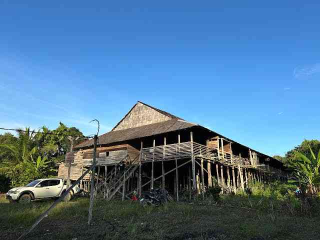

YUSTINO YOEL
REKAYASA KOMPUTER

NIM: 2356202033
KARTU IDENTITAS
Mengenal Lebih Dekat Suku Dayak Mualang
Dayak Mualang merupakan salah satu sub-suku Dayak yang berasal dari Kalimantan Barat, Indonesia. Mereka termasuk dalam rumpun Dayak Ibanic yang memiliki keterkaitan erat dengan suku Iban. Sebagian besar masyarakat Dayak Mualang menetap di Kabupaten Sekadau dan wilayah sekitarnya.
Masyarakat Dayak Mualang menggunakan bahasa Mualang, yang masih satu rumpun dengan bahasa Iban. Bahasa ini menjadi alat komunikasi utama dalam kehidupan sehari-hari. Mereka juga mahir berbahasa Indonesia untuk berinteraksi dengan masyarakat luar.
Rumah adat mereka disebut rumah panjang atau Betang. Rumah ini menjadi simbol kebersamaan dan pusat kegiatan adat. Selain itu, masyarakat Dayak Mualang juga mahir dalam seni ukir, tenun, dan memainkan musik tradisional seperti sape’.

Tarian khas mereka antara lain:
- Ngajat Kayau: Tarian perang khas Dayak.
- Tari Pingan: Tarian piring khas wilayah Belitang.
- Tari Pedang Mualang: Tarian pria dari daerah Merbang dan Sebetung.
- Ajat Temuai Datai: Tarian penyambutan tamu.
Kepercayaan asli mereka adalah Kaharingan, namun kini sebagian besar juga memeluk agama Kristen dan Islam. Meski begitu, tradisi tetap dijaga seperti:
- Gawai: Pesta panen penuh syukur dan kebersamaan.
- Nyobeng: Ritual penyucian tengkorak.
- Ritual Penyembuhan: Minta kesembuhan dari roh jahat.
- Berangap: Minum tuak sebagai syarat peminangan.
Dayak Mualang adalah penjaga warisan budaya Kalimantan Barat. Meski zaman berubah, identitas mereka tetap hidup dalam semangat dan adat yang lestari.
Sejarah Suku Dayak Mualang
Suku Dayak Mualang merupakan salah satu sub-suku Dayak dari rumpun Ibanic yang tinggal di wilayah Kalimantan Barat. Mereka terkenal dengan warisan budaya yang kuat, sistem pertanian tradisional, dan kehidupan bersama di rumah betang (rumah panjang)...
Baca Selengkapnya